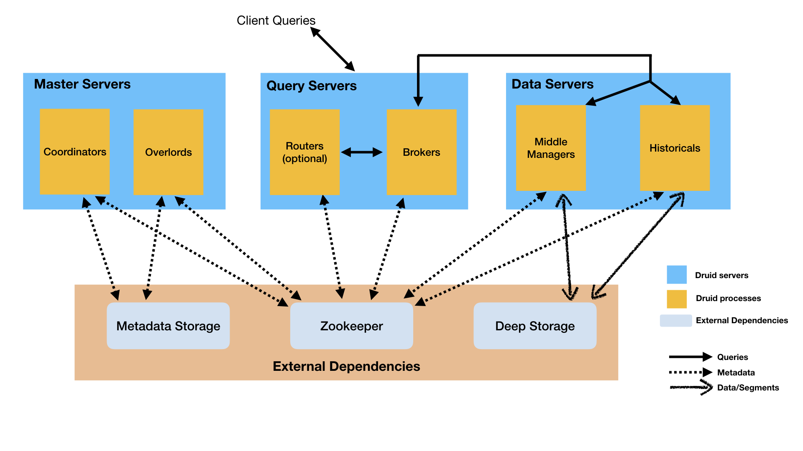

分布式的内存OLAP（On-Line Analytical Processing） 系统，推荐需要做预聚合的数据接入。
常用作需要快速聚合的高度并发API的后端。
Druid 的核心特性主要包括：
列式存储。列式存储的优势在于查询的时候可以只返回指定的列的数据，其次同一列数据往往具有很多共性，这带来另一个好处就是存储的时候压缩效果比较好。
可扩展的分布式架构。
并行计算。
数据摄入支持实时和批量。这里的实时的意思是输入摄入即可查。如果大家看过我之前关于实时计算的文章，应该猜到了这就是典型的 lambda 架构，后面再细说。
运维友好。
云原生架构，高容错性。
支持索引，便于快速查询。
基于时间的分区
自动聚合。
其中很多特性其实应该算是 OLAP 系统的共同特性，比如列式存储等。不像大多数传统系统，Druid 可以在数据摄入前对数据进行预聚合。这种预聚合操作被称之为 rollup，这样就可以显著的节省存储成本。
Druid：是一个实时处理时序数据的OLAP数据库，因为它的索引首先按照时间分片，查询的时候也是按照时间线去路由索引。
Kylin：核心是Cube，Cube是一种预计算技术，基本思路是预先对数据作多维索引，查询时只扫描索引而不访问原始数据从而提速。
ES：最大的特点是使用了倒排索引解决索引问题。根据研究，ES在数据获取和聚集用的资源比在Druid高。
Spark SQL：基于Spark平台上的一个OLAP框架，基本思路是增加机器来并行计算，从而提高查询速度。
应用场景
大比例的插入操作，少量的更新操作
大部分查询应用聚合和报告查询使用group by、查询或者扫描操作
数据有一个时间列
load data from kafka HDFS Amazon S3
摄入
Druid 提供两种数据摄入方式，其中一种是实时数据摄入kafka；另一种是批处理数据摄入hdfs、csv。
（摄入-概念）https://www.afenxi.com/41702.html
（只适用于kafka）
通过提交配置json文件到druid的overlord使它可以消费druid。
提交可以用curl：curl -L -X 'POST' -H 'Content-Type:application/json' -d @log_config_kis.json overlordLeader地址
json的具体格式参考：https://www.jianshu.com/p/1054ba0502df?utm_campaign=maleskine&utm_content=note&utm_medium=seo_notes&utm_source=recommendation
https://druid.apache.org/docs/latest/development/extensions-core/kafka-ingestion.html （官网）
数据查询
支持两种查询：JSON-HTTP，SQL两种方式
CURL（http://druid.io/docs/0.10.1/querying/querying.html）、
jdbc（https://druid.apache.org/docs/0.14.2-incubating/querying/sql.html#jdbc）
查询类型:
Timeseries:基于时间范围查询的类型
TopN:基于单维度的排名查询
GroupBy:基于多维度的分组查询
数据格式
时间序列
时间序列（Timestamp），本身 Druid 是时间序列数据库，Druid 中所有查询以及索引过程都和时间维度有关。
Druid 底层使用绝对毫秒数保存时间戳，默认使用 ISO-8601 格式展示时间：yyyy-MM-ddThh:mm:sss.SSSZ
时间戳字段"format" : "auto" 时必须是long类型的，而且是毫秒。
看日志会有receivedCount=5, sentCount=5, droppedCount=0, unparseableCount=0 表示已经录入。
维度列
维度列（Dimensions），Druid 的维度概念和广义的 OLAP 定义一致，一条记录中的字符、数值、多值等类型的数据均可看作是维度列。
维度列可用于过滤筛选（filter）、分组（group）数据
度量列
度量列（Metrics），Druid 的度量概念也与广义的 OLAP 定义一致，一条记录中的数值（Numeric）类型数据可看作是度量列，
度量列被用于聚合（aggregation）和计算（computation）操作
架构
https://druid.apache.org/docs/0.18.1/design/architecture.html （官网）
https://blog.csdn.net/run_bigdata/article/details/101048408 （讲的很好）
https://yuzhouwan.com/posts/5845/ （也很不错，尤其架构那的图非常清晰）

Coordinator：顾名思义，Coordinator 就是协调器，主要负责 segment 的分发确保segments自平衡等。比如我们只保存 30 天的数据，这个规则就是由 Coordinator 来定时执行的。
摄入：
Overlord：处理数据摄入的 task，将 task 提交到 MiddleManager。比如使用 Tranquility 做数据摄入的时候，每个 segment 都会生成一个对应的 task。
MiddleManager : MiddleManager 可以认为是一个任务调度进程，主要用来处理 Overload 提交过来的 task。每个 task 会以一个 JVM 进程启动。
Peon（苦力）Peons运行一个单独的任务在一个单独的JVM,MiddleManager负责创建执行任务的peon；peons自己运行是非常稀少的。
query：
Broker : 处理外部请求，并对结果进行汇总。
Router : Router 相当于多个 Broker 前面的路由，不是必须的。
Historical ：Historical 可以理解为将 segment 存储到本地，相当于 cache。相比于 Deep Storage 的，Historical 将 segment 直接存储到本地磁盘，只有 segment 存储到本地才能被查询。其实这个地方是有点异于直观感受的。正常我们可能会认为查询先查本地，如果本地没有数据才去查 Deep Storage，但是实际上如果本地没有相应的 segment，则查询是无法查询的。Historical 处理那些 segment 是由 Coordinator 指定的，但是 Historical 并不会和 Coordinator 直接交互，而是通过 Zookeeper 来解耦。
Deep storage：一个被druid可访问的共享的文件存储；比如分布式文件系统HDFS、S3、一个网络挂在的文件系统；用它来存储已经陪摄入的任何数据；
MiddleManager & Historical数据服务。
Queries: Routers 将请求路由到 Broker，Broker 向 MiddleManager 和 Historical 进行数据查询。这里 MiddleManager 主要负责查询正在进行摄入的数据查询，比如现在正在摄入 12:00 ~ 13:00 的数据，那么我们要查询就去查询 MiddleManager，MiddleManager 再将请求分发到具体的 peon，也就是 task 的运行实体上。而历史数据的查询是通过 Historical 查询的，然后数据返回到 Broker 进行汇总。这里需要注意的时候数据查询并不会落到 Deep Storage 上去，也就是查询的数据一定是 cache 到本地磁盘的。很多人一个直观理解查询的过程应该是先查询 Historical，Historical 没有这部分数据则去查 Deep Storage。Druid 并不是这么设计的。
Data/Segment: 这里包括两个部分，MiddleManager 的 task 在结束的时候会将数据写入到 Deep Storage，这个过程一般称作 Segment Handoff。然后 Historical 定期的去下载 Deep Storage 中的 segment 数据到本地。
Metadata: Druid 的元数据主要存储到两个部分，一个是 Metadata Storage，这个一般是 MySQL 等关系型数据库；另一个是 Zookeeper。下图是 Druid 在 Zookeeper 中的 znode。zk 的作用主要是用来给各个组件进行解耦。
总结
Historical是历史数据摄取和查询到节点，Coordinator监控协调Historical节点上的任务，确保segments自平衡；
MiddleManager是一个新数据摄取和查询的节点；overlord监控和协调task任务的分配和segments的发布。
三种托管计划： “Data” servers run Historical and MiddleManager processes.
“Query” servers run Broker and (optionally) Router processes.
“Master” servers run Coordinator and Overlord processes. They may run ZooKeeper as well.
配置
时间列 必须有。format可以是iso, millis, posix，或者auto
https://druid.apache.org/docs/0.18.1/tutorials/tutorial-ingestion-spec.html#rollup
通过设置roll-up 为false不做预聚合，但是不推荐使用。
“segmentGranularity” : “HOUR”, 指一个segment应该包含多大时间间隔的数据
“queryGranularity”:”minute” 查询的力度，设置之后druid摄入数据的时间序列会约等。”timestamp”:”2018-01-01T01:02:14Z” —-》2018-01-01T01:02:00.000Z
reportParseExceptions默认是false，如果开启这个功能，当摄入数据过程中出现数据异常将会导致摄入数据停止。
一个task可能消费一个或多个kafka partition,partition的编号被哪个task消费存在这样的一个映射关系：Id = partition % taskCount
Druid 通过 Indexing 处理将原始数据以 segment 的方式存储在数据节点，segment 是一种查询优化的数据结构。
Kafka索引任务存在两种状态, reading 状态和publish状态，当task读取数据到达duration配置的时间，则进行publish状态，publish也会持续completionTimeout 时间，当task进入publish状态的时候立马又创建下一轮的任务开始从上一轮的task消费到的位置开始reading，这么一直不停地交错进行。Supervisor 也维护这两个队列用于存放两种状态的task，并且还维护一个全局的kafka 分区与offset的映射关系表：
https://blog.csdn.net/weixin_38736107/article/details/98474160
https://druid.apache.org/docs/0.14.2-incubating/development/extensions-core/kafka-ingestion.html#submitting-a-supervisor-spec
https://druid.apache.org/docs/latest/development/extensions-core/kafka-ingestion.html
lateMessageRejectionPeriod
Configure tasks to reject messages with timestamps earlier than this period before the task was created; for example if this is set to PT1H and the supervisor creates a task at 2016-01-01T12:00Z, messages with timestamps earlier than 2016-01-01T11:00Z will be dropped. This may help prevent concurrency issues if your data stream has late messages and you have multiple pipelines that need to operate on the same segments (e.g. a realtime and a nightly batch ingestion pipeline).
earlyMessageRejectionPeriod
Configure tasks to reject messages with timestamps later than this period after the task reached its taskDuration; for example if this is set to PT1H, the taskDuration is set to PT1H and the supervisor creates a task at 2016-01-01T12:00Z, messages with timestamps later than 2016-01-01T14:00Z will be dropped. Note: Tasks sometimes run past their task duration, for example, in cases of supervisor failover. Setting earlyMessageRejectionPeriod too low may cause messages to be dropped unexpectedly whenever a task runs past its originally configured task duration.
taskDuration: 间隔多长时间任务停止read开始publish。从任务开始启动后开始计数，一般设成1h
completionTimeout：publish的持续最长时间，超时时任务会失败。时间从taskDuration时间结束开始。
出错
druid集群从0.14.2升级到0.18.1，新版本不兼容下面Fastjon的 第一种写法，改成第二种解决。
第一种会把格式序列化进去，即一个json不再是一行而是多行的可视化展示，druid的新版本会把没一行当成一个json。。。
（具体源码没有研究过，通过报错的log猜出来的原因，尝试后druid可消费新数据。）
1 | // 将JavaBean序列化为带格式的JSON文本 |
参考
https://zhuanlan.zhihu.com/p/133156613
官方文档：http://druidio.cn/docs/0.9.0/tutorials/tutorial-kafka.html
取数文档：http://lxw1234.com/archives/2015/11/561.htm
（原理）https://yuzhouwan.com/posts/5845/
数据模型：http://lxw1234.com/archives/2018/01/890.htm
druid intervals inclusive：Left (start) is inclusive and right (end) is exclusive.
it is left closed, right open